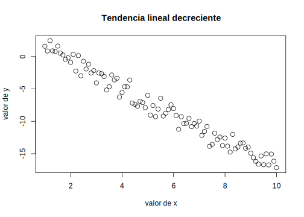
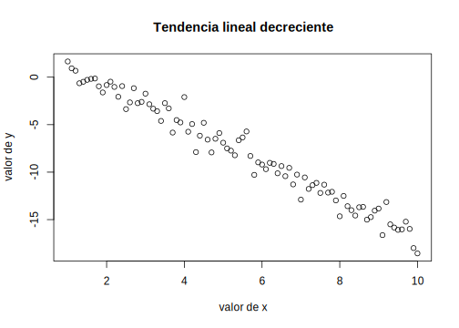

Antes de empezar
Materiales
A lo largo del manual se usan datos para ejemplificar procedimientos. Algunos de ellos son ficticios y han sido construidos especialmente para ilustrar algún aspecto de una distribución o del resultado de una técnica. Sin embargo, la mayoría de los ejemplos están realizados a partir de datos reales, provenientes de bases de datos de libre disponibilidad que hemos elegido teniendo en cuenta los intereses de los púbicos a que nos dirigimos. Estas bases son las que se presentan a continuación, en el repositorio https://github.com/jcrodriguez1989/EstadisticaParaCienciasSocialesConR se encuentra una descripción más detallada, así como los cuestionarios, las bases de datos correspondientes y los manuales de códigos para poner en correspondencia los nombres de las variables dados en la base, con los aspectos que se indagan de las unidades (hogares o personas).
Encuesta Permanente de Hogares
La EPH es un programa nacional de producción permanente de indicadores sociales cuyo objetivo es conocer las características socioeconómicas de la población. Es realizada en forma conjunta por el Instituto Nacional de Estadística y Censos (INDEC) y las Direcciones Provinciales de EstadÌstica (DPE) (INDEC 2003). Los datos se recogen por medio de dos cuestionarios; uno de ellos que pregunta por características del hogar y la vivienda y el otro por las personas individualmente.
Encuesta Nacional de Factores de Riesgo
La tercera ENFR es un estudio de corte transversal que permite vigilar la prevalencia de factores de riesgo de enfermedades no transmisibles y evaluar su evolución en comparación con las ediciones anteriores realizadas en los años 2005 y 2009. Es realizada conjuntamente entre el Instituto Nacional de Estadística y Censos (INDEC) y el Ministerio de Salud de la Nación de la República Argentina.
La encuesta tiene por objetivos: Conocer la distribución de los factores de riesgo en la población de 18 años y más. Estimar su prevalencia. Determinar el perfil de la población bajo riesgo a través de sus características sociodemográficas, socioeconómicas, educativas y del entorno familiar social (Begué, Galante, and Gaudio 2013; INDEC 2013).
Latinobarómetro
Latinobarómetro es un estudio de opinión pública que aplica anualmente alrededor de 20.000 entrevistas en 18 países de América Latina representando a más de 600 millones de habitantes.
Corporación Latinobarómetro es una ONG sin fines de lucro con sede en Santiago de Chile, única responsable de la producción y publicación de los datos.
La Corporación Latinobarómetro investiga el desarrollo de la democracia, la economía y la sociedad en su conjunto, usando indicadores de opinión pública que miden actitudes, valores y comportamientos. Los resultados son utilizados por los actores socio políticos de la región, actores internacionales, gubernamentales y medios de comunicación Latinobarómetro (2010), Latinobarómetro (2019).
Encuesta Nacional sobre Prevalencias de Consumo de Sustancias Psicoactivas
La encuesta produce datos sobre:
• La cantidad de personas que declararon haber consumido sustancias psicoactivas en diferentes períodos de referencia (prevalencias) y su incidencia en relación con la población total. Las sustancias psicoactivas comprenden: las drogas legales o sociales (tabaco, bebidas alcohólicas), ilegales (marihuana, cocaína, pasta base, éxtasis, opiáceos y anestésicos, crack, alucinógenos, inhalables y otras drogas) y fármacos (estimulantes, tranquilizantes, anorexígenos);
• Las características sociodemográficas, socioeconómicas, educativas y del entorno familiar social de la población de 16 a 65 años de edad que consume sustancias psicoactivas.
El objetivo general de esta Encuesta fue contribuir a actualizar el sistema de información sobre el consumo de sustancias psicoactivas a nivel nacional y, de esa manera, al diseño de políticas públicas más eficaces, orientadas a mejorar las condiciones de salud de la población Indec (2008), INDEC (2008).
Aplicación de la escala de Bayley
La base provista contienen 454 casos de niñas y niños sometidos a evaluación por medio de las subescalas mental y motora de la escala de Bayley.
La Escala Bayley de Desarrollo Infantil se aplica en personas de los 2 a los 36 meses de vida y ha sido adaptada a Córdoba a las edades de 0 a 24 meses por Rodríguez, M. and Calderón, L. and Cabrera, L. and Ibarra, N. and Moya, P. and Faas, A. E. (2005). Los dos primeros años de vida humana son momentos cruciales para inferir de manera temprana la evolución del desarrollo posterior (Papalia, Wendkos Olds, and Duskin Feldman 2004).
La prueba, de origen norteamericano, consta de varias versiones desde su creación por su autora Nancy Bayley en 1933, existen revisiones de 1969, 1977 y 1993.
Las escalas de Bayley (EBDI) fueron publicadas en el año 1969. En España aparecieron estandarizadas en el año 1977, y la revisión americana (las Bayley Scale of Infant Development-II o BSID II) fueron publicadas en 1993, Albers and Grieve (2007), Ballot et al. (2017). El interés por disponer de unas escalas adecuadamente tipificadas como las Bayley creció a lo largo de la primera mitad del siglo XX, al ir aumentando el conocimiento de las capacidades infantiles, los cambios cerebrales durante la etapa posnatal y el estudio de cómo influyen los factores del medio, la familia y los individuos en el desarrollo temprano. Además, la proporción de personas prematuras ha ido aumentando considerablemente a lo largo de los años, con el consiguiente aumento de casos que nacen con el riesgo de presentar un retraso en el desarrollo.
El objetivo inicial de las escalas fue medir la inteligencia a edades muy tempranas. Los ítems que la componen están ordenados en una secuencia de dificultades que aumentan con la edad. En su forma actual, la EBDI permite medir el desarrollo mental, el desarrollo psicomotor y el comportamiento infantil.
El nivel de desarrollo mental tiene 163 ítems que miden el desarrollo por medio de una serie de habilidades. El nivel del desarrollo motor se compone de 81 ítems que representan tanto habilidades motoras finas como gruesas, y se centra principalmente en el grado de control del cuerpo y la coordinación de los movimientos. La distinción entre la escala mental y motora se justifica porque se parte de que la preplanificación y el razonamiento son componentes de las actividades mentales, pero no de las habilidades motoras. Por tanto, los ítems de las dos escalas son distintos, aunque en algunas ocasiones una misma habilidad este incluida en ambas escalas. El registro comportamental del sujeto complementa la información obtenida mediante las escalas mental y motora, proporciona una descripción del comportamiento infantil relativo al que se esperaría de cualquier persona que estuviera en el mismo estadio.
Se dice que la escala de Bayley es una escala ecléctica, es decir los ítems no están agrupados por áreas, factores o subescalas con puntuaciones determinadas para cada una de ellas. No obstante, las Bayley II intenta incluir ítems de las cinco áreas que la guía americana para la evaluación de los candidatos de servicios especiales requiere que sean evaluadas: desarrollo físico, cognitivo, lingüístico, psicosocial y autoayuda. Sin embargo continúa sin haber medidas para cada una de estas áreas calificadas.
Como se menciono anteriormente en 1993 se publicó una revisión de las escalas originales. Las Bayley II mantienen la misma estructura y objetivos que la anterior, pero introducen algunos cambios como resultado de los trabajos de investigación sobre el desarrollo infantil en los últimos años y para mejorar la adecuación de los datos y el material a la población infantil. Uno de los cambios importantes es que se amplía la edad de evaluación desde el 1º mes hasta los 42 meses. Además se han incorporado ítems cuyo estudio han demostrado tener una adecuada fiabilidad y validez; así los 163 ítems de la escala mental y los 81 de la escala motora de Bayley han pasado a ser 178 y 111 respectivamente en las Bayley II.
Actualmente se utiliza la versión correspondiente a 1993. Como su autora lo indica, el objetivo principal de esta prueba es diagnosticar demoras del desarrollo y planificar estrategias de intervención. Actualmente puede decirse que esta Escala constituye uno de los test más utilizados para evaluar el desarrollo neuroconductual durante los primeros meses de vida, sin embargo es poco utilizada como herramienta de diagnóstico en nuestro medio. La misma está formada por tres Sub-Escalas:
Escala Mental: Evalúa memoria, habituación, resolución de problemas, conceptualización numérica temprana, generalización, clasificación, vocalizaciones, lenguaje y habilidades sociales. Es decir estima aspectos relacionados con el desarrollo cognitivo y la capacidad de comunicación.
Escala Motora: Evalúa el control de los músculos gruesos y finos del cuerpo. Esto incluye movimientos asociados con rodar, girar, encogerse y estirarse, sentarse, pararse, caminar, correr y saltar. Se evalúa también la manipulación motora fina implicada en la prensión, adecuado uso de elementos de escritura e imitación de movimientos de las manos. En definitiva, evalúa el grado de coordinación corporal, así como habilidades motrices finas en manos y dedos.
Escala Comportamental: Evalúa aspectos cualitativos de la situación de examen como atención/alerta, orientación/interacción hacia la tarea, regulación emocional y calidad del movimiento. De este modo permite analizar la naturaleza de las orientaciones sociales y objetivas hacia el entorno. La información de esta escala debe utilizarse para suplementar la información cuantitativa de las dos escalas anteriores.
El desarrollo infantil implica un proceso de continuos cambios, en el cual la persona va a experimentar diversas trasformaciones y progresos. Estos cambios no sólo se advierten en el plano motor e intelectual (esto es, en su capacidad para dominar movimientos y razonar), sino que además se pueden apreciar múltiples reorganizaciones en el plano emocional (su capacidad para sentir) y social (su capacidad para relacionarse con su entorno).
La adquisición de estas competencias variará en función de la madurez neurofisiológica, de las características individuales, y de la riqueza y calidad de los estímulos de su entorno. De allí, la importancia de este período, pues sentará la base para el desarrollo y crecimiento óptimos.
La escala asigna puntajes brutos en función de la cantidad de pruebas exitosamente pasadas para una determinada edad. Posteriormente, estos puntajes brutos son transformados en índices mentales o motores que permiten ubicar a la persona evaluada en un nivel de desarrollo normal, levemente retrasado, significativamente retrasado o, si supera el normal, acelerado, para su edad. Cada índice de desarrollo mental (IDM) y motor (IDP), tiene una distribución con una media de 100 y una desviación estándar de 15. Un puntaje de 100 o más en cualquier escala indica el nivel promedio de performance en una edad dada. Puntajes de 85 y 115 corresponden a 1 DS por debajo y por encima de la media y puntajes de 70 y 130 a 2 DS. En una distribución normal 2/3 de las personas evaluadas obtiene puntajes entre 85 y 115, 95% entre 70 y 130 y casi todas (99,9%) entre 55 y 145 (3 DS a cada lado de la media).
Tercera edad
Son los datos provenientes de una encuesta realizada a 506 personas adultas mayores que participan de las actividades del Centro de Promoción del Adulto Mayor (CEPRAM, http://cepram.org.ar/). Se releva grado de satisfacción con los talleres a que asisten y variables de clasificación: sexo, edad, grupo conviviente, educación, etc.
Herramientas
La elección de R
Para realizar análisis de datos existen numerosos programas informáticos, que se ocupan de los procesos computacionales, de manera que quienes los usan solo deban decidir qué procedimiento aplicar, cuidar que se cumplan las condiciones que hacen válido al procedimiento (los supuestos) y realizar una lectura correcta y completa del resultado que se obtiene, sin involucrarse con las operaciones de cálculo. Estos programas o “paquetes estadísticos” reúnen en un entorno único las operaciones más frecuentemente usadas en investigación y análisis de datos y las ponen al alcance de un público no especializado. Algunos de uso muy común son SPSS, SAS, INFOSTAT, STATA, STATISTICAL, etc. De la larga lista de opciones disponibles, este manual usa un software que se llama R, elección que se fundamenta en que R es varias cosas al mismo tiempo:
Es un software para análisis de datos: lo usan profesionales de la estadística, analistas de datos e investigadores de diversas disciplinas para extraer significado de información cuantitativa, para hacer descripciones e inferencias, visualización de datos y modelización predictiva.
Es un lenguaje de programación orientado a objetos, diseñado por profesionales de la estadística y para el uso en investigación cuantitativa: el análisis se hace escribiendo sentencias en este lenguaje, que provee objetos, operadores y funciones que hacen muy intuitivo el proceso de explorar, modelar y visualizar datos.
Es un ambiente para el análisis estadístico: en R hay funciones para prácticamente todo tipo de transformación de datos, de modelización y de representaciones gráficas que pueda hacer falta.
Es un proyecto de código abierto: esto significa no solo que se lo puede descargar y usar gratis, sino que el código es abierto y cualquiera puede inspeccionar o modificar las rutinas. Como sucede con otros proyectos de código abierto, como Linux, R ha mejorado sus códigos tras varios años de “muchos ojos mirando” y aportando soluciones. También como otros proyectos de código abierto, R tiene interfaces abiertas, por lo que se integra fácilmente a otras aplicaciones y sistemas.
Es una comunidad: R fue inicialmente desarrollado por Robert Gentleman y Ross Ihaka (Ihaka and Gentleman 1996), del Departamento de Estadística de la Universidad de Auckland, en 1993 y desde entonces el grupo que dirige el proyecto ha crecido y se ha difundido por el mundo. Además, miles de otras personas han contribuido con funcionalidades adicionales por medio del aporte de “paquetes” que utilizan los 2 millones de personas que lo utilizan. Como resultado, existe una intensa comunidad de usuarios y usuarias de R on-line, con muchos sitios que ofrecen recursos para principiantes y también para quienes tienen más experiencia. A esa comunidad se puede recurrir para consultas y para salvar dificultades, son muy activas y dispuestas a ayudar.
R integra programas llamados paquetes, que sirven para realizar análisis específicos. Los paquetes son rutinas que realizan conjuntos de operaciones especializadas, y una de las potencialidades de R es que especialistas de diferentes disciplinas pueden desarrollar paquetes para determinados tipos de análisis y ponerlos a disposición del resto de la comunidad. En la actualidad hay más de 10000 paquetes y el conjunto crece porque la comunidad R es muy activa y continuamente se hacen aportes.
Actualmente, los principales medios de comunicación usan R para expresar datos de manera gráfica.
No solo cuenta con los métodos estándar sino que, debido a que los principales avances en procedimientos estadísticos se realizan en R, las técnicas más actualizadas están usualmente primero disponibles en R, quienes desarrollan paquetes comerciales necesitan tiempo poner las actualizaciones al alcance de sus clientes, y ellos a menudo deben pagar por las actualizaciones.
Permite la reproducción de los análisis por parte de cualquiera que conozca el código que se aplicó, por lo que aporta una herramienta necesaria en los proyectos de ciencia abierta, en especial para la reproducibilidad de los resultados.
Si no se cuenta con R instalado, es posible crear una cuenta en RStudio cloud (https://rstudio.cloud/) y trabajar con todos los archivos disponibles en la nube, sin necesidad de instalar localmente el software.
Por estas razones, R es uno de los lenguajes de programación que más uso tiene y se está convirtiendo en la lingua franca del análisis de datos.
Como lenguaje, R tiene varias interfaces gráficas, que es el modo en que las personas puede interactuar con él. R es el motor y del mismo modo en que, para manejar un auto no hace falta saber cómo funciona el motor, también aquí será suficiente contar con un buen conjunto de comandos (volante, pedales…) para hacer uso de la potencia de ese motor, la interface provee esos comandos. De las interfaces existentes, hemos elegido RStudio (RStudio Team 2018) que es un entorno de desarrollo integrado (IDE) de R para facilitar la edición de código que ofrece diversas herramientas para hacer muy accesible el uso de R por parte de quienes no se dedican a la programación, sino que aplican procedimientos estadísticos para sus trabajos de investigación.
Una línea de tiempo sobre el desarrollo de R puede encontrar en https://blog.revolutionanalytics.com/2017/10/updated-history-of-r.html
Instalación de R y RStudio
En http://cran.r-project.org “Download R for [Linux, Mac o Windows]”, y luego “install R for the first time”. Una vez descargado, se instala siguiendo las instrucciones de las pantallas, aceptando las opciones por defecto que se ofrecen.
Una vez que R está instalado, se debe sumar RStudio. El lugar de descarga es http://www.rstudio.com/products/rstudio/download/. Allí se elige la version gratis (free version) de RStudio Desktop y se baja hasta encontrar el sistema operativo y la version que corresponda a nuestro equipo. Luego se ejecuta el instalador de RStudio y se eligen las opciones por defecto. Cuando esté ya instalado, se accede por medio de RStudio; si al instalar R se creó un acceso directo a R en el escritorio, se lo puede eliminar. Al abrir RStudio, R es detectado automáticamente y desde allí operaremos.
Los componentes de RStudio
Cuando abrimos RStudio, vamos a encontrar tres paneles, uno a la izquierda, más grande, y dos a la derecha. En “file” se solicita un nuevo script, que se abre a la izquierda y ahora quedan cuatro paneles:
Superior izquierdo es el script que se acaba de abrir, un documento editable en el que se escriben los comandos.
Inferior izquierdo es la consola, donde se encuentra la ejecución de los comandos y, si corresponde, los resultados de operaciones solicitadas.
Superior derecho es el entorno de trabajo, allí aparece cada uno de los objetos que se crean durante la sesión.
Inferior derecho, cuatro pestañas con los directorios de trabajo, los paquetes instalados, la ayuda (cuando se pide), los gráficos que se hagan.
Operaciones en el script
Antes de empezar a operar es necesario crear un lugar donde se alojarán los archivos que vamos a usar. Ese lugar, en R se llama “proyecto”. Así, la primera acción será en File New Project New Directory New Project, darle un nombre y definir su ubicación en la computadora en que se trabaje. Si esa ubicación es una carpeta sincronizada (de drive o dropbox u otra) todos los archivos necesarios para trabajar en el proyecto estarán disponibles.
El script es un editor de textos en que se escriben comandos y se ejecutan, ya sea con el botón “run” o con una combinación de teclas que, según la configuración puede ser Ctrl+R o Ctrl+Enter. Una vez escrita la instrucción, se solicita su ejecución y se obtiene el resultado.
Los elementos que maneja R son objetos: un número, un vector, una base de datos, una tabla y muchos otros. Inicialmente, los que interesan a fin del análisis de datos son: vectores y matrices de datos.
Constante
Un objeto numérico puede tener un valor fijo, si definimos a x como el número 3
En el panel superior derecho aparece este objeto. El signo <- que define el objeto es equivalente a = que da la idea de asignar a x el valor 3.
Si se lo invoca (se lo llama es decir, se escribe su nombre), muestra su valor.
## [1] 3Las salidas de R, es decir los resultados que muestra, están antecedidos por un signo numeral (#) y cada elemento de los resultados lleva su numeración entre corchetes. Aquí el resultado es solo un número, por eso hay un [1] a la izquierda.
Este objeto es un número, lo que puede saberse si se pregunta de qué clase es este objeto:
## [1] "numeric"Es numérico.
Si hubiésemos definido el objeto:
## [1] "character"Es carácter, para que lo acepte como valor nuevo, se debe poner entre comillas; de lo contrario, si se escribe:
\(t<-a\)
Buscará ese objeto, que no ha sido definido antes y dará error. Esta cualidad se puede usar cuando los números codifican categorías, como cuando se usa 1 para varones y 2 para mujeres:
## [1] "character"Allí se entiende al número como un código.
Otros tipos de objeto son lógicos
## [1] "logical"El objeto v es lógico, esta clase de objeto puede tomar dos valores TRUE y FALSE.
Es posible transformar una clase de objeto en otra. Por ejemplo, si un valor numérico fue cargado como carácter, como el caso de u en el ejemplo anterior, se lo vuelve numérico pidiendo:
## [1] "numeric"Pero si intentáramos eso con t, el resultado falla, porque no se interpreta un valor numérico.
Cuando el objeto es un número, se puede operar simplemente con él
## [1] 15Aquí no se creó ningún objeto nuevo, solo se hizo la operación y se mostró el resultado. Para crearlo, hace falta ponerle nombre:
Y no veremos su valor hasta que no lo solicitemos
## [1] 15Suma resta, multiplicación y división se hacen con los signos que conocemos:
## [1] 18## [1] -12## [1] 45## [1] 5## [1] 78Para elevar a una potencia se usa ^, por ejemplo, para hacer dos a la tercera potencia, es:
## [1] 8O \(x\) (que está guardado con el valor 3) a la quinta potencia:
## [1] 243Las raíces son potencias fraccionarias, por lo que puede conseguirse la raíz cuadrada de \(x\) así:
## [1] 1.732051Pero como se usa a menudo, hay una función de biblioteca para eso:
## [1] 1.732051Para raíces que no sean cuadradas, se debe usar la potencia fraccionaria. Para la raiz quinta de 24 es:
## [1] 1.888175Un comando útil es el de redondeo. Si no queremos expresar la raiz de siete con seis decimales, sino solo con dos, se redondea a dos decimales:
## [1] 2.645751## [1] 2.65## [1] 2.65Vector
Cuando se trabaja con variables, el conjunto de valores que asume es un objeto que se llama vector. Se lo genera con una letra c y paréntesis que indica concatenar valores. Por definición, un vector contiene elementos de la misma clase:
## [1] "numeric"## [1] "character"Si se intenta combinar diferentes clases de objeto, el vector tomará la clase con menos propiedades:
## [1] "character"Cuando pedimos que muestre los elementos de l:
## [1] "1" "3" "a"Aparecen los números 1 y 3 entre comillas, lo que indica que los está tomando como caracteres, por lo que no podrá operar con ellos. Si lo intentamos por ejemplo, multiplicandolo por cinco, se obtiene un error:
Error in 5 * c : non-numeric argument to binary operator
Esto sucede porque los números fueron tratados como caracteres.
Ejemplo: Los valores de PBI de cinco países son 10000, 3000, 7000, 4000 y 15000, se los puede concatenar así, definiendo el vector que los contiene con el nombre pib5:
Y se pueden hacer operaciones con él, por ejemplo, sumar sus valores
## [1] 39000O sumarlos y dividir por 5, que va a dar el promedio:
## [1] 7800Pero para esto hay una función de biblioteca que calcula la media (promedio) directamente.
## [1] 7800O definir un nuevo vector que consista en cada uno de ellos incrementado en un 10%:
## [1] 11000 3300 7700 4400 16500Un vector puede crearse de este modo, concatenando varios valores, o bien como secuencia de números, por ejemplo creamos el vector \(diez.pri\) como la secuencia de los números que van del 1 al 10, y pedimos que se muestre:
## [1] 1 2 3 4 5 6 7 8 9 10Como puede verse, una vez que los objetos han sido creados, RStudio ofrece el autocompletado, eso vale también para comandos, por lo que no hace falta recordar con precisión el nombre de cada uno, se empieza a escribirlo y RStudio lo sugiere.
Si se quiere que la secuencia tenga saltos de magnitud diferente a 1, el comando es seq, cuyos argumentos son: los números inicial y final de la secuencia y la amplitud del salto de cada valor al siguiente. Para ir del 1 al 10 de a 0.50:
## [1] 1.0 1.5 2.0 2.5 3.0 3.5 4.0 4.5 5.0 5.5 6.0 6.5 7.0 7.5 8.0
## [16] 8.5 9.0 9.5 10.0En este ejemplo, no creamos ningún objeto, solo solicitamos la secuencia para verla. El [16] que está debajo del [1] indica que el valor 8.5 ocupa el lugar 16 de la secuencia.
El comando rep, repite un valor las veces que se solicite, repetir el valor 4, siete veces es:
## [1] 4 4 4 4 4 4 4O el valor “perro”, tres veces:
## [1] "perro" "perro" "perro"Estas maneras de generar secuencias pueden combinarse:
## [1] 1.0 2.0 3.0 4.0 5.0 1.0 1.8 2.6 3.4 4.2 5.0 5.8 6.6 65.0 65.0
## [16] 65.0 65.0Notemos que hay un decimal (cero) en los enteros, eso es porque los números que componen el vector fueron interpretados como valores reales y no como enteros, como sucedió en el ejemplo anterior. Con que haya un solo número decimal, todos los componentes del vector son tratados como tales, a los enteros les corresponderá parte decimal igual a cero. Un vector siempre contiene elementos de la misma clase.
Una clase de vector frecuente cuando se trata con variables cualitativas es el “factor”, que está constituido por números que corresponden a etiquetas de valor. Por ejemplo, se define un vector como los códigos 1 y 2 para personas pertenecientes a los grupos experimental y control respectivamente y pedimos que se muestre:
## [1] "numeric"## [1] 1 2Es un vector numérico con valores 1 y 2. Luego indicamos que lo trate como un factor y volvemos a pedir su visualización:
## [1] "factor"## [1] 1 2
## Levels: 1 2Se trata de un factor y, si bien sus valores siguen siendo 1 y 2, ahora son llamados “niveles del factor”. Los niveles pueden preguntarse explícitamente:
## [1] "1" "2"Y también definirse, como etiquetas:
Ahora éstos son los nuevos niveles:
## [1] "experimental" "control"Observemos la diferencia que esto tiene con haber evitado la codificación numérica y definir:
## [1] "character"## [1] "experimental" "control"## [1] "control" "experimental"## [1] experimental control
## Levels: control experimentalComo el vector fue creado como de caracteres, sus valores se ordenan alfabéticamente. Cuando se muestra el vector, los niveles aparecen en el orden que elegimos, pero cuando se lo vuelve factor, se los ordena alfabéticamente. Eso es un problema que resolvemos evitando los vectores de caracteres. Cuando deben usarse, se realiza una codificación numérica y luego se etiquetan los niveles.
Si 10 personas han sido asignadas al grupo experimental y otras 10 al grupo control, el vector que representa su pertenencia puede ser:
pertenencia <- c(rep(1, 10), rep(2, 10))
pertenencia <- as.factor(pertenencia)
levels(pertenencia) <- c("experimental", "control")Así como class indica de qué clase es un objeto, existen comandos para preguntar por características específicas de los objetos (como su clase, y otras) y obtener respuestas por sí o por no. Por ejemplo, si se pregunta si el valor de \(x\) (recién definido) es un factor:
## [1] FALSEO si uno dividido cero es infinito:
## [1] TRUEEste comando da un resultado de clase lógica, con FALSE y TRUE como posibilidades.
Los corchetes, [], permiten seleccionar elementos de un vector. La lectura es que, del vector, se retienen los valores que cumplen con la condición que está dentro del corchete. Se define \(z\), como la secuencia de 1 a 6 y luego a h como los elementos de z que sean menores a 5:
## [1] 1 2 3 4 5 6## [1] 1 2 3 4La longitud de un vector es el número de elementos que contiene, se solicita con el comando length:
## [1] 6## [1] 4En la variable pertenencia, los niveles son:
## [1] "experimental" "control"Mientras que los valores:
## [1] experimental experimental experimental experimental experimental
## [6] experimental experimental experimental experimental experimental
## [11] control control control control control
## [16] control control control control control
## Levels: experimental controlLa longitud del vector es:
## [1] 20Matriz de datos
Cuando se combinan varios vectores, todos de la misma longitud, se construye un “data frame”, una matriz de datos, cuyo formato más frecuente es que tenga los casos en las filas y variables en las columnas; cada columna es un vector que contiene los valores de cada variable.
Por ejemplo, si tenemos 10 observaciones que corresponden a 7 varones y 3 mujeres, que son estudiantes de la universidad, y el vector que representa el sexo de esas personas, con las categorías codificadas como 1 y 2, es:
Se ha creado el vector sexo por medio de la concatenación de dos repeticiones, del 1 siete veces y del 2, tres veces. Luego se trató a ese vector como un factor y se etiquetaron sus niveles. El siguiente vector contiene las edades de las mismas personas:
Entonces, se crea una matriz de datos con el comando:
En el panel superior derecho han aparecido los objetos que acaban de crearse. De este último se indica allí la cantidad de casos (observaciones) y de varables. Cuando se lo cliquea, se obtiene una vista en una ventana separada del script.
La misma vista puede lograrse con el comando:
Para ver la primera parte de la matriz de datos, se usa el comando head:
## sexo edad
## 1 varones 25
## 2 varones 28
## 3 varones 31
## 4 varones 20
## 5 varones 21
## 6 varones 22Que, por defecto, muestra las seis primeras filas de la matriz.
Esto que ha sido creado es un nuevo objeto, de clase:
## [1] "data.frame"Y cuyos atributos son:
## $names
## [1] "sexo" "edad"
##
## $class
## [1] "data.frame"
##
## $row.names
## [1] 1 2 3 4 5 6 7 8 9 10Los nombres (names) son las denominaciones de las columnas (las variables), la clase es lo que solicitamos antes y row.names son los nombres de las filas, que por defecto coloca numerada consecutivamente. Cada uno de esos atributos está precedido por un signo pesos, ese es el modo de acceder a cada uno de ellos. Por ejemplo, para ver el vector que representa el sexo, pedimos:
## [1] varones varones varones varones varones varones varones mujeres mujeres
## [10] mujeres
## Levels: varones mujeresEl signo pesos separa el nombre de la matriz de datos del nombre de la variable: df$x quiere decir, la variable “x”, perteneciente a la matriz “df”.
Los números entre corchetes (el [1] y [9] en este ejemplo) indican el número del primer elemento de esa fila. Podemos preguntar de qué clase es este vector:
## [1] "factor"Por defecto lo leyó como factor, con los dos niveles que se indican más arriba. A ellos se puede llegar directamente:
## [1] "varones" "mujeres"Y se los puede redefinir:
Ahora la matriz se ve:
El primer resumen útil de las variables de una matriz de datos es la tabla univariada. Para cada una de las dos variables, tenemos:
##
## femenino masculino
## 7 3##
## 20 21 22 25 28 31
## 1 1 1 2 4 1Lectura de una matriz de datos
Es poco frecuente la creación de matrices de datos en R, salvo a fines de ejemplificación. Por el contrario, a menudo es necesario leer un base que está guardada con un determinado formato (xls, ods, sav, sas, txt, csv, etc). El comando genérico es read.table, que requiere especificación sobre los simbolos que separan los campos y los decimales, si la primera fila lleva el nombre de las variables. Otros comandos más específicos son read.csv, read.csv2, el primero usa como separador por defecto “,”, el segundo usa “;” y no necesitan que se indique si están los nombres de las variables, porque por defecto los toman. A modo de ejemplo, leemos la base de la Encuesta Permanente de Hogares correspondiente al tercer trimestre de 2018. El archivo tiene frmato de texto (.txt) y se llama “usu_individual_T318.txt”. Vamos a darle el nuevo nombre de eph.3.18:
Hemos indicado:
- la ruta del archivo, dentro de nuestro directorio
- que los campos están separados con un “;”
- que la primera fila tiene lso nombres de las variables
En el panel superior derecho aparece el nombre de este nuevo objeto con la cantidad de casos (filas) y de variables (columnas).
Graficar
Para ver un ejemplo de gráfico básico, puede copiar y pegar el siguiente código en su script. Allí se define a \(x\) como una secuencia de números que va de 1 a 10 en intervalos de 0.1. Luego se define \(y\) como una función lineal de \(x\) (\(y=3-2*x\)). El tercer comando indica que se grafiquen las dos variables y les pone nombre a los ejes y al título del gráfico.
x <- seq(1, 10, .1)
y <- 3 - 2 * x
plot(x, y,
xlab = "valor de x", ylab = "valor de y",
main = "Función lineal decreciente"
)
También se puede agregar una perturbación aleatoria, por ejemplo, valores aleatorios provenientes de una distribución normal con media uno y desviación estándar cero.
x <- seq(1, 10, .1)
y <- 3 - 2 * x + rnorm(91)
plot(x, y,
xlab = "valor de x", ylab = "valor de y",
main = "Tendencia lineal decreciente"
)
Cambie los coeficientes de la función lineal para probar los efectos en el gráfico.
Instalación de paquetes
Cuando se descarga R y RStudio se cuenta con el sistema básico del lenguaje R. Las operaciones mencionadas en el apartado anterior y otras, están disponibles en esa base. Sin embargo, una gran cantidad de procedimientos están programados y ofrecidos como “paquetes”, que sirven para tareas específicas. Su creación y desarrollo es parte de la potencialidad de R, porque son aportes de la comunidad que los diseña y los ofrece continuamente. En la actualidad hay más de 10000 paquetes en la CRAN (Comprehensive R Archive Network) aplicables a una gran diversidad de procedimientos.
La instalación de paquetes de R puede hacerse desde la línea de comando con la instrucción install.packages(““) y el nombre del paquete entre comillas, también puede hacerse más directo, porque la IDE RStudio tiene, en el panel inferior derecho, una pestaña (la tercera) que dice packages y en ella, una opción install que abre una ventana para escribir (con autocompletado para los existentes) el nombre del paquete que se quiere instalar.
A lo largo del curso y en la medida que sea necesario, se cargarán paquetes específicos.
Debido a que la Estadística no trabaja con observaciones aisladas sino con conjuntos de ellas, siempre es necesario resumir la información, para presentarla de manera accesible a la lectura y para extraer significado.
Una gran tabla proveniente de registros hospitalarios que muestre las edades de madres primerizas no puede leerse de manera directa; es necesario buscar indicadores de síntesis, uno de ellos, muy difundido, es el promedio, un resumen de la información podría decir: “En este hospital se atendieron durante el año 2024, 350 partos. Las madres tuvieron edades entre los 17 y los 45 años, con una edad promedio de 21”.
Sucede del mismo modo al observar los puntajes de una prueba de memoria aplicada a muchas personas o la distribución de votos luego de una elección. En esos casos podemos resumir esa información indicando el promedio (con las limitaciones que esta medida tiene). También es posible indicar cuántas personas tienen un valor menor a cierta cifra o mayor a otra: ¿cuántas de las madres primerizas son menores de 20 años?, ¿repiten de grado con igual frecuencia los varones que las mujeres? O bien expresar los valores a través de gráficos, que suelen aportar mucha información de manera abreviada (aunque también pueden ser engañosos).
Si de cada asistente a una escuela se conoce si repite el curso o no, la información agregada puede sintetizarse con la tasa de repitencia a nivel de la escuela, y expresar el resultado como: “en esta escuela uno de cada quince estudiantes está repitiendo el curso”. Identificar un trending topic requiere observar una gran cantidad de tweets para detectar las repeticiones y las tendencias.
Entonces, la Estadística Descriptiva provee de una serie de procedimientos dirigidos a resumir, a sintetizar información, a volverla manejable para poder interpretarla y extraer conclusiones a partir del conjunto de datos que, de otra manera, serían ininteligibles.